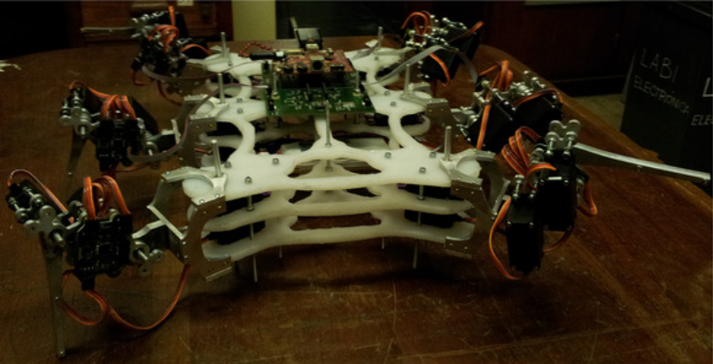
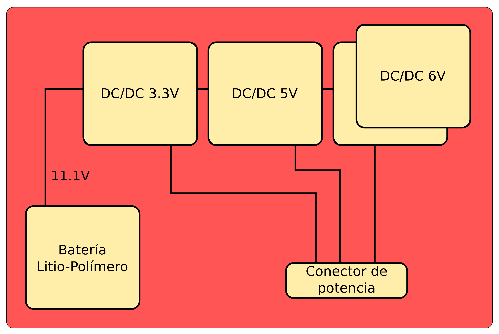

Sistema de control
distribuido para
maquinas caminantes
Joaquin de Andres y Martinez de Arenasaa, Dr. Ing. Ignacio Masa y Dr. Ing. Mauricio Anigsteinb
| a GPSIC, Dpto. de Electrónica, Facultad de Ingeniería, Universidad de Buenos Aires; | b Laboratorio de Robótica, Dpto. de Mecánica, Facultad de Ingeniería, Universidad de Buenos Aires;
Historia
Historia
Presentacion del estudio
Presentacion del estudio


Modos de caminar
Wave gait - Definicion
\[\begin{aligned} \phi_{2m+1} & = F(m\beta), \end{aligned} \] \[\begin{aligned} m & =1,2,...,(n-1) \text{ y } 1\ge\beta\geq\frac{3}{2n} \end{aligned} \]
\[\begin{aligned} \phi_{2m+1} & : \text{Fase de la pata } 2m+1\\ m & : \text{Indice de la pata} \\ 2n & : \text{Cantidad de patas} \\ \beta & : \text{Factor de trabajo} \\ F & : \text{Funcion fraccional} \end{aligned} \]
Wave gait - Según patas
\[\begin{aligned} 2n = 4, m = {1}&; \phi_3 = \beta; 1\ge\beta\geq\frac{3}{4} \end{aligned} \]
\[\begin{aligned} 2n = 6, m = {1, 2}&; \phi_3 = \beta, \phi_5= 2\beta-1; 1\ge\beta\geq\frac{1}{2} \end{aligned} \]
\[\begin{aligned} 2n = 8, m = {1, 2, 3}&; \phi_3 = \beta, \phi_5= F(2\beta), \phi_7=F(3\beta); 1\ge\beta\geq\frac{3}{8} \end{aligned} \]
Modos de caminar
Wave gait - Diagrama pie bola
Wave gait - Diagrama de Gait
Wave gait - Diagrama de Gait
Grados de libertad


Criterio de Grübler-Kutzbach
\[\begin{aligned} F & = \lambda(n-j-1)+\sum^{j}_{i=1}f_i \end{aligned} \]
\[\begin{aligned} F & : \text{Grados de libertad del mecanismo} \\ \lambda & : \text{Grados de libertad del espacio de trabajo} \\ n & : \text{Numero de vínculos} \\ j & : \text{Numero de articulaciones} \\ f_i & : \text{Libertades de cada articulacion} \end{aligned} \]
Tres miembros con dos grados de libertad
\[\begin{aligned} F & = 6(8 - 9 - 1) + \sum^{6}_{i=1}1 + \sum^{3}_{i=1}3 = 3 \end{aligned} \]
\[\begin{aligned} F & : \text{Grados de libertad del mecanismo} \\ \lambda & : 6 \\ n & : 2 \text{ vinculos } * 3 \text{ miembros } + 2 \text{ vinculos base } = 8 \\ j & : 9 (j_1= 6 \text{ articulaciones 1gdl; } j_3= 3 \text{ articulaciones 3gdl}) \\ f_i & : 1 \text{ para } j_1 \text{ y } 3 \text{ para } j_3 \end{aligned} \]
Cuatro miembros con dos grados de libertad
\[\begin{aligned} F & = 6(10 - 12 - 1) + \sum^{8}_{i=1}1 + \sum^{4}_{i=1}3 = 2 \end{aligned} \]
\[\begin{aligned} F & : \text{Grados de libertad del mecanismo} \\ \lambda & : 6 \\ n & : 2 \text{ vinculos } * 4 \text{ miembros } + 2 \text{ vinculos base } = 10 \\ j & : 12 (j_1= 8 \text{ articulaciones 1gdl; } j_3= 4 \text{ articulaciones 3gdl }) \\ f_i & : 1 \text{ para } j_1 \text{ y } 3 \text{ para } j_3 \end{aligned} \]
Tres miembros con tres grados de libertad
\[\begin{aligned} F & = 6(11 - 12 - 1) + \sum^{9}_{i=1}1 + \sum^{3}_{i=1}3 = 6 \end{aligned} \]
\[\begin{aligned} F & : \text{Grados de libertad del mecanismo} \\ \lambda & : 6 \\ n & : 3 \text{ vinculos } * 3 \text{ miembros } + 2 \text{ vinculos base } = 11 \\ j & : 12 (j_1= 9 \text{ articulaciones 1gdl; } j_3= 3 \text{ articulaciones 3gdl}) \\ f_i & : 1 \text{ para } j_1 \text{ y } 3 \text{ para } j_3 \end{aligned} \]
K miembros con tres grados de libertad
\[\begin{aligned} F & = 6(3k + 2 - 4k - 1) + \sum^{3k}_{i=1}1 + \sum^{k}_{i=1}3 = 6 \end{aligned} \]
\[\begin{aligned} F & : \text{Grados de libertad del mecanismo} \\ \lambda & : 6 \\ n & : 3 \text{ vinculos } * k \text{ miembros } + 2 \text{ vinculos base } = 3k + 2 \\ j & : 4k (j_1= 3k \text{ articulaciones 1gdl; } j_3= k \text{ articulaciones 3gdl }) \\ f_i & : 1 \text{ para } j_1 \text{ y } 3 \text{ para } j_3 \end{aligned} \]
Estabilidad
Ecuaciones de equilibrio
\[\begin{aligned} \text{Fuerzas: }&\bar{N_{1}}+\bar{N_{2}}+\bar{N_{3}}+\bar{P} = 0 \label{eq:equilibriof}\\ \text{Torques: }&\bar{\tau_{1}}+\bar{\tau_{2}}+\bar{\tau_{3}} = 0 \label{eq:equilibriot} \end{aligned} \]
Patron de soporte
Margen de estabilidad
Generacion de trayectorias
Del cuerpo
Generacion de trayectorias
De las patas

Generacion de trayectorias
Interpolacion parabolica-lineal


Cinematica del robot
Cinematica del robot
Patas en transferencia - Denavit-Hartenberg
\[\begin{aligned} \begin{array}{c||c|c|c|c|} & a & d & \alpha & \theta \\\hline 1 & a_1 & 0 & -\frac{\pi}{2} & \theta_1 \\\hline 2 & a_2 & 0 & 0 & \theta_2 \\\hline 3 & a_3 & 0 & 0 & \theta_3 \\\hline \end{array} \end{aligned} \]
\[\begin{aligned} {^{0}T_{1}} &= \left[\begin{array}{ccc|c} \cos{\theta_1} & 0 & -\sin{\theta_1} & \cos{\theta_1} a_1\\ \sin{\theta_1} & 0 & \cos{\theta_1} & \sin{\theta_1} a_1\\ 0 & -1 & 0 & 0\\\hline 0 & 0 & 0 & 1 \end{array}\right]\\ {^{1}T_{2}} &= \left[\begin{array}{ccc|c} \cos{\theta_2} & -\sin{\theta_2} & 0 & \cos{\theta_2} a_2\\ \sin{\theta_2} & \cos{\theta_2} & 0 & \sin{\theta_2} a_2\\ 0 & 0 & 1 & 0\\\hline 0 & 0 & 0 & 1 \end{array}\right]\\ {^{2}T_{3}} &= \left[\begin{array}{ccc|c} \cos{\theta_3} & -\sin{\theta_3} & 0 & \cos{\theta_3} a_3\\ \sin{\theta_3} & \cos{\theta_3} & 0 & \sin{\theta_3} a_3\\ 0 & 0 & 1 & 0\\\hline 0 & 0 & 0 & 1 \end{array}\right] \end{aligned} \]
\[\begin{aligned} {^{0}T_{3}} &= {^{0}T_{1}} {^{1}T_{3}}\\ &= \left[ \begin{array}{ccc|c} \cos{\theta_1}\cos{\theta_2+\theta_3}&-\cos{\theta_1}\sin{\theta_2+\theta_3}&-\sin{\theta_1}&\cos{\theta_1}(\cos{\theta_2+\theta_3} a_3 + \cos{\theta_2} a_2 + a_1) \\ \sin{\theta_1}\cos{\theta_2+\theta_3}&-\sin{\theta_1}\sin{\theta_2+\theta_3}&\cos{\theta_1} &\sin{\theta_1}(\cos{\theta_2+\theta_3} a_3 + \cos{\theta_2} a_2 + a_1) \\ -\sin{\theta_2+\theta_3}& -\cos{\theta_2+\theta_3}& 0 &-(\sin{\theta_2+\theta_3} a_3 + \sin{\theta_2} a_2)\\\hline 0 & 0 & 0 & 1 \end{array}\right] \end{aligned} \]
\[\begin{aligned} \bar{p} = \left[ \begin{array}{c} p_x \\ p_y \\ p_z \end{array}\right]^{T} &= \left[\begin{array}{c} \cos{\theta_1}(\cos{\theta_2+\theta_3} a_3 + \cos{\theta_2} a_2 + a_1)\\ \sin{\theta_1}(\cos{\theta_2+\theta_3} a_3 + \cos{\theta_2} a_2 + a_1)\\ -(\sin{\theta_2+\theta_3} a_3 + \sin{\theta_2} a_2) \end{array}\right]\\ &\Rightarrow\left[\theta_1, \theta_2, \theta_3\right] \end{aligned} \]
Cinematica del robot
Cuerpo con N patas en soporte

\[\begin{aligned} P_{A} = P_{B} + R \left({^{B}P_{P}} + {^{P}P_{A}}\right)\\ {^{P}P_{A}} = R^T \left(P_{A} - P_{B}\right) - {^{B}P_{P}}\\ \end{aligned} \] \[\begin{aligned} \text{Se aplica la solución de la pata en transferencia} \end{aligned} \]
Realizacion practica
Realizacion practica


Mecánica
Patas
Mecánica
Cuerpo
Mecánica


Plataforma electrónica

Plataforma electrónica
Controlador principal
Plataforma electrónica
Controlador pata
Plataforma electrónica
Sistema de potencia
Sistema de control distribuido
Sistema de control distribuido
Escenarios
